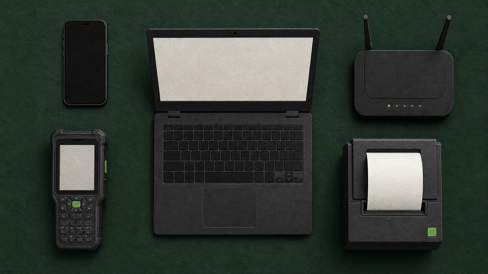
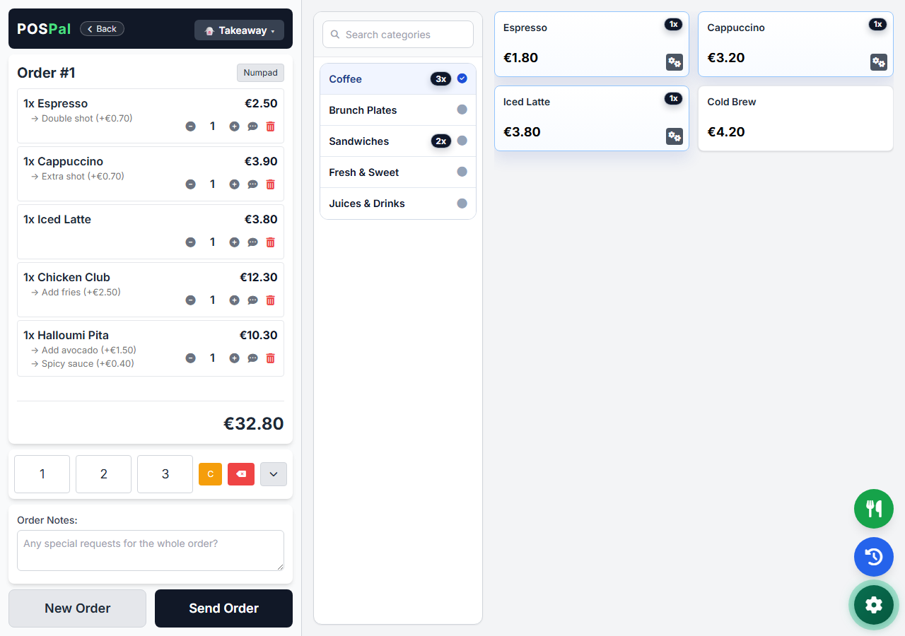

Τι κρατά ο σερβιτόρος, τι συμβαίνει όταν πατήσει αποστολή και πότε χρειάζεται πραγματικά ειδική συσκευή.
ΑΠΟ ΤΟΝ ROBERT AIREYΙδρυτή της POSPal
Δημοσίευση: θα προστεθεί · Ενημέρωση: θα προστεθεί

Ο βασικός εξοπλισμός πίσω από μια φορητή παραγγελία. Επεξηγηματική εικονογράφηση, όχι λίστα συμβατών μοντέλων.
PDA σημαίνει Personal Digital Assistant. Στην εστίαση, όμως, η λέξη χρησιμοποιείται πιο απλά: είναι η φορητή συσκευή με την οποία ο σερβιτόρος καταχωρίζει και στέλνει μια παραγγελία.
Το PDA δεν είναι ολόκληρο το σύστημα παραγγελιοληψίας. Είναι το πρώτο σημείο μιας μεγαλύτερης διαδρομής που περιλαμβάνει τη συσκευή, το πρόγραμμα, τον υπολογιστή του καταστήματος, το τοπικό δίκτυο και, όταν χρειάζεται, τον εκτυπωτή της κουζίνας.
Ο σερβιτόρος ανοίγει την παραγγελιοληψία στη φορητή συσκευή, επιλέγει τραπέζι και προϊόντα, προσθέτει τις απαραίτητες σημειώσεις και στέλνει την παραγγελία. Η συσκευή είναι το εργαλείο εισαγωγής. Η υπόλοιπη δουλειά γίνεται από το σύστημα πίσω της.
Γι’ αυτό δύο καταστήματα μπορεί να χρησιμοποιούν τη λέξη «PDA» αλλά να εννοούν διαφορετικό εξοπλισμό. Το ένα μπορεί να έχει ανθεκτικά επαγγελματικά τερματικά. Το άλλο μπορεί να χρησιμοποιεί κατάλληλα κινητά ή tablet.
Πώς φτάνει μια παραγγελία από το τραπέζι στην κουζίνα;
Η διαδρομή είναι απλή:
Ο σερβιτόρος καταχωρίζει την παραγγελία από τη φορητή συσκευή.
Η συσκευή επικοινωνεί με τον υπολογιστή μέσα από το προσβάσιμο τοπικό δίκτυο.
Το πρόγραμμα παραλαμβάνει την παραγγελία και την εντάσσει στη ροή του καταστήματος.
Η παραγγελία συνεχίζει προς την κουζίνα στην οθόνη ή στον εκτυπωτή που έχει επιλέξει το κατάστημα.

Πραγματικό στιγμιότυπο POSPal στον υπολογιστή Windows.
Τι εξοπλισμό χρειάζεται ένα σύστημα παραγγελιοληψίας;
Στη βασική του μορφή χρειάζεται τρία πράγματα:
έναν υπολογιστή Windows όπου τρέχει το πρόγραμμα,
μία κατάλληλη φορητή συσκευή με πρόγραμμα περιήγησης,
ένα τοπικό δίκτυο που επιτρέπει στις συσκευές να επικοινωνούν.
Ο θερμικός εκτυπωτής είναι προαιρετικός. Η ανάγκη του εξαρτάται από το πώς θέλει να δουλεύει η κουζίνα.
Χρειάζεται ειδικό PDA ή αρκεί ένα κινητό;
Το ειδικό PDA έχει νόημα όταν το περιβάλλον και η καθημερινή χρήση απαιτούν συσκευή αγορασμένη ειδικά για τη δουλειά. Ανθεκτικότητα, συνεχής χρήση και συγκεκριμένος τρόπος φόρτισης μπορεί να επηρεάσουν την επιλογή.
Σε άλλες περιπτώσεις, ένα κατάλληλο κινητό ή tablet αρκεί. Πρέπει να διαθέτει πρόγραμμα περιήγησης και να μπορεί να φτάσει τον υπολογιστή Windows μέσα από το προσβάσιμο τοπικό δίκτυο.
Δεν πουλάμε PDA. Δεν χρεώνουμε ανά PDA. Το κινητό της ομάδας σου μπορεί να γίνει PDA.
Δύο πρακτικά σημεία πριν ξεκινήσει η βάρδια
Το ίδιο Wi-Fi δεν σημαίνει πάντα επικοινωνία
Δύο συσκευές μπορεί να δείχνουν συνδεδεμένες στο ίδιο Wi-Fi αλλά να μην μπορούν να επικοινωνήσουν. Ρυθμίσεις όπως η απομόνωση επισκεπτών μπορούν να τις κρατούν χωριστά.
Ο εκτυπωτής χρειάζεται πραγματική δοκιμή
Το ότι ένας εκτυπωτής εμφανίζεται στα Windows δεν αρκεί. Πριν βασιστεί πάνω του η κουζίνα, χρειάζεται πραγματική δοκιμαστική εκτύπωση.
Συχνές ερωτήσεις
Τι σημαίνουν τα αρχικά PDA;
PDA σημαίνει Personal Digital Assistant, δηλαδή προσωπικός ψηφιακός βοηθός. Στην εστίαση είναι η φορητή συσκευή από την οποία ο σερβιτόρος περνά την παραγγελία.
Χρειάζεται να αγοράσω ειδική συσκευή PDA;
Όχι απαραίτητα. Με το POSPal μπορείς να χρησιμοποιήσεις κατάλληλο κινητό ή tablet που ανοίγει τη σελίδα παραγγελιοληψίας και επικοινωνεί με τον υπολογιστή Windows στο τοπικό δίκτυο.
Λειτουργεί χωρίς σήμα ή internet;
Δεν χρειάζεται σήμα κινητής για την τοπική παραγγελιοληψία. Χρειάζεται όμως η συσκευή να επικοινωνεί με τον υπολογιστή Windows στο προσβάσιμο τοπικό δίκτυο. Internet χρειάζεται για λειτουργίες όπως η δημοσίευση του QR μενού, ο έλεγχος της άδειας και οι ενημερώσεις.
Μπορώ να χρησιμοποιήσω τον θερμικό εκτυπωτή που έχω;
Το POSPal εμφανίζει θερμικούς εκτυπωτές που είναι εγκατεστημένοι στα Windows. Αυτό δεν αποδεικνύει ότι λειτουργεί κάθε μοντέλο ή σύνδεση. Κάνε πραγματική δοκιμαστική εκτύπωση πριν τον χρησιμοποιήσεις σε βάρδια.
Το POSPal αντικαθιστά την ταμειακή;
Όχι. Είναι εργαλείο παραγγελιοληψίας και ροής κουζίνας. Η ταμειακή και το φορολογικό POS παραμένουν ξεχωριστά.